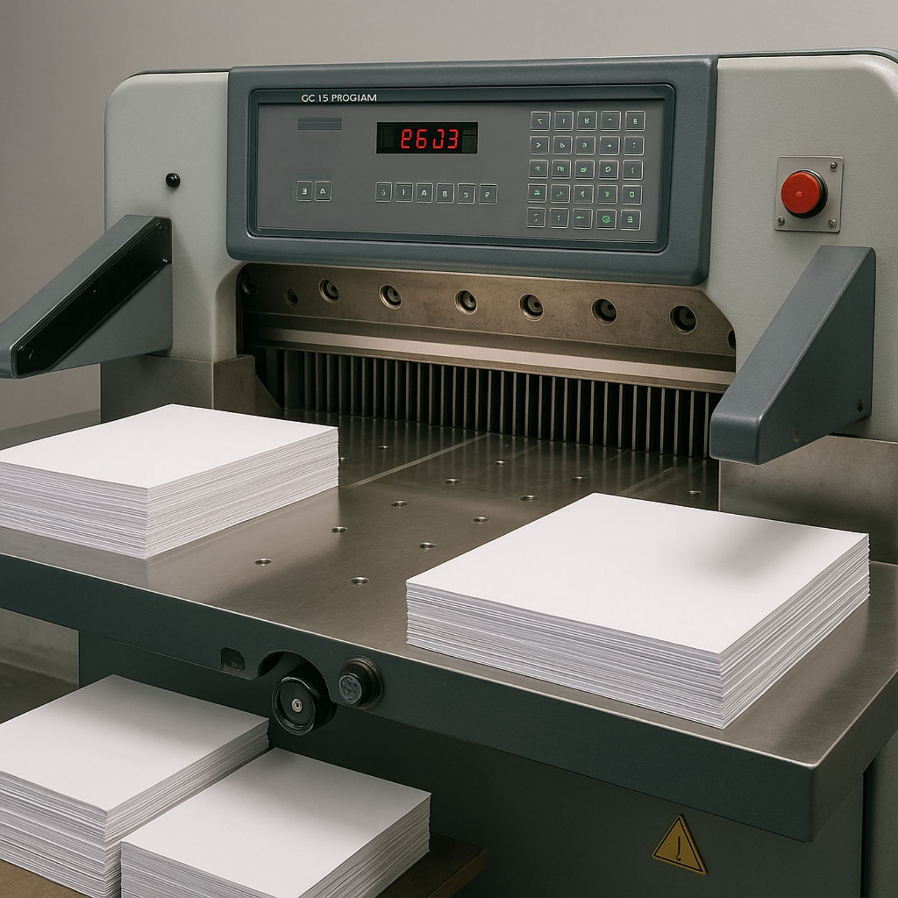
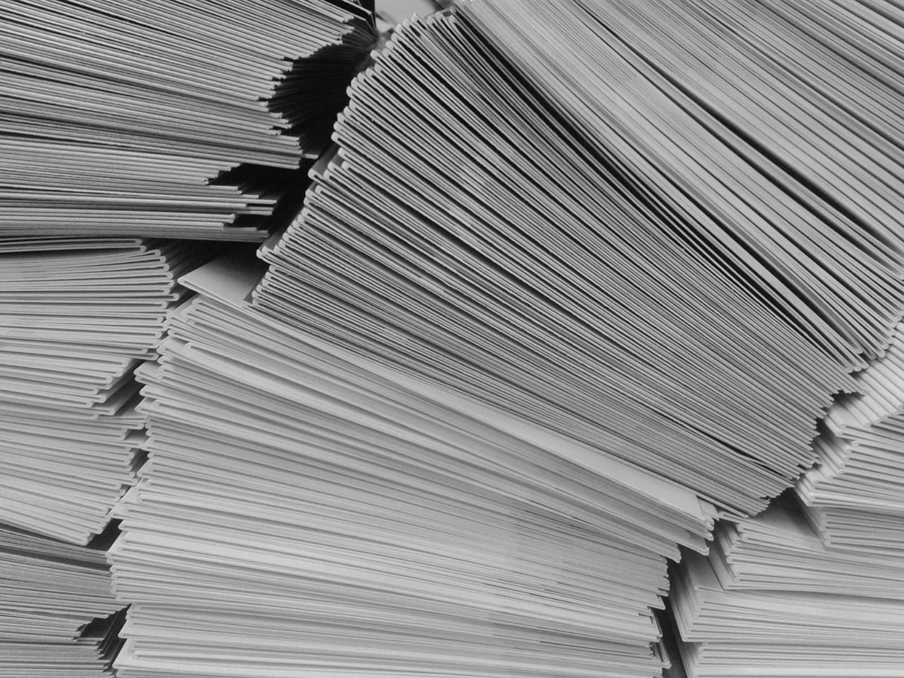
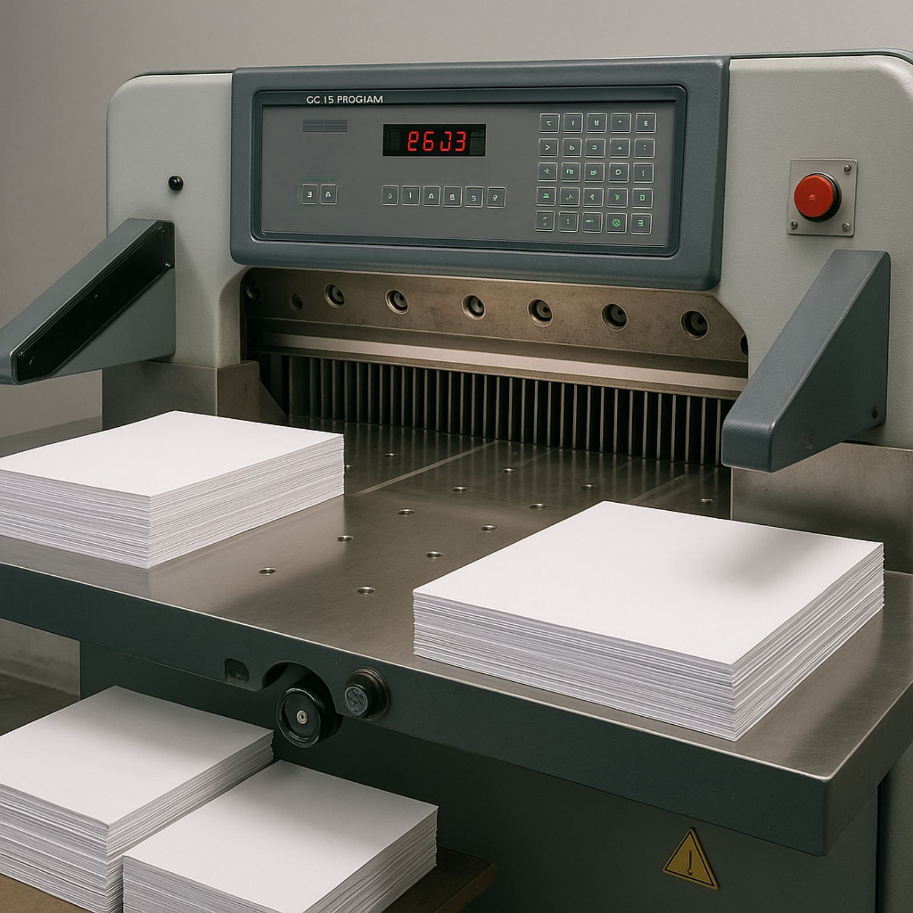
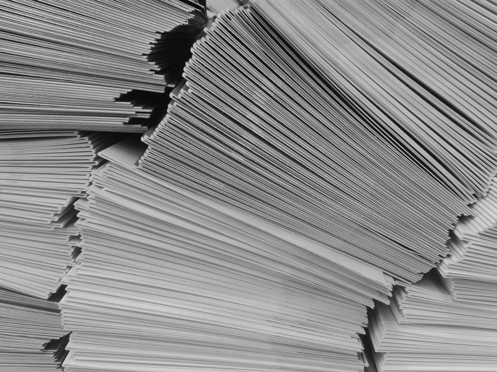

Miért a Forte-Press?
Cégünk fő profilja a szórólapok, plakátok (A/3 méretig), tálcabetétek, terítékalátétek, kisebb terjedelmű és példányszámú kiadványok gyártása ofszet technológiával. A budapesti Forte-Press Bt. több, mint 30 éve szolgálja ki hazai és külföldi partnereit – kis példányszámtól a több százezres mennyiségig. 4 színes Heidelberg nyomdagépünk, 1 színes nyomdagépeink és egyéb berendezéseink, valamint a több évtizedes szakmai tapasztalatunk garantálja a professzionális és hatékony végeredményt.
- Gyors, akár 1-2 napos határidők
- Szakmai támogatás: grafikákkal, szórólap-terjesztéssel kapcsolatos tanácsadás
- Versenyképes árak: (A/6 méretű szórólapok már nettó 1,25 Ft/db ártól)
- Minőségi papíralapanyagok
- Tapasztalt nyomdász csapat
 



Árlista
Aktuális árainkat az alábbi képen láthatják. A lista rendszeresen frissül. Ha egyedi igénye van, kérjen személyre szabott ajánlatot e-mailben vagy telefonon!
Kapcsolat
Vegye fel velünk a kapcsolatot egyszerűen:
Telefon: +36 20 923 6130
E-mail: fortepressnyomda@gmail.com
Cím: Budapest, XIV. kerület – személyes átvétel előzetes egyeztetés alapján